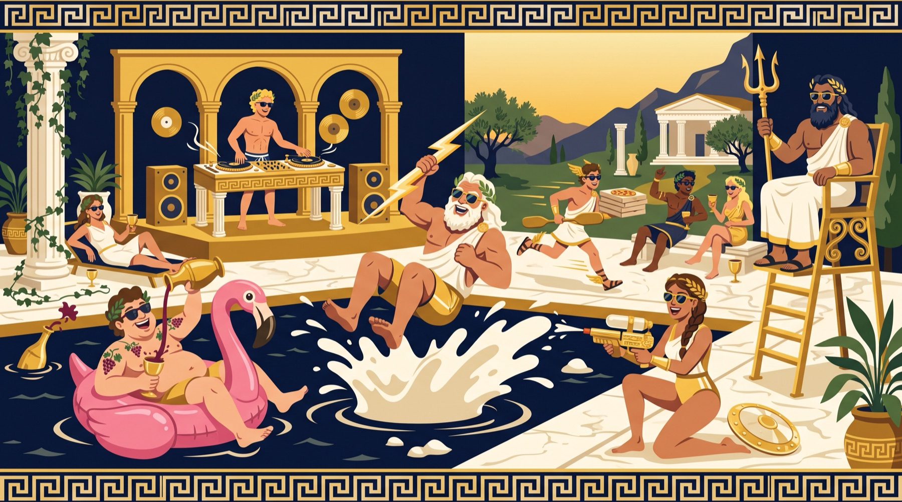
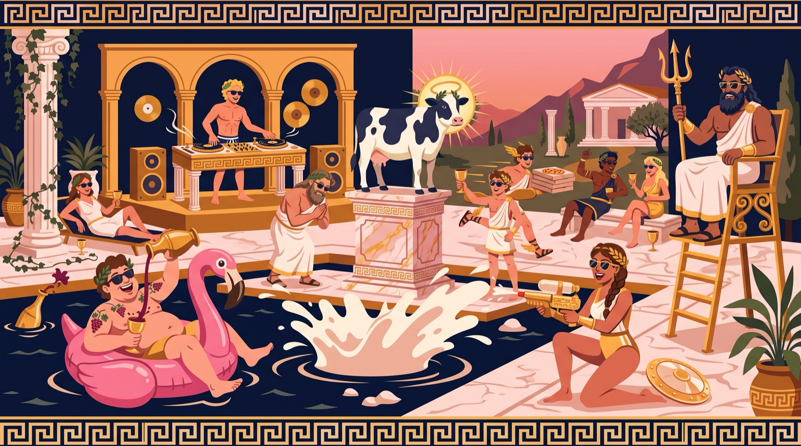
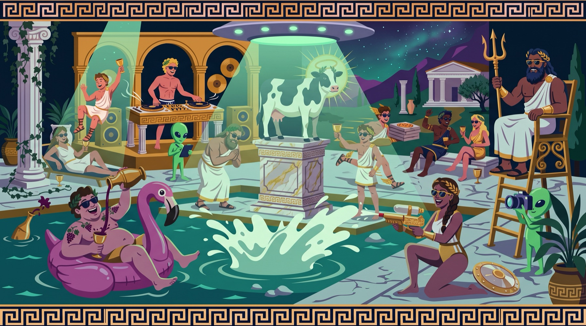

<title>Summer MMXXVI — Choose Your Universe</title>
<style>
  :root{
    --night:#101623;
    --night-deep:#0B101B;
    --panel:#161f31;
    --panel-edge:#26324b;
    --ivory:#F2EAD8;
    --ivory-dim:#C9C2B2;
    --slate:#8A93A8;
    --gold:#E8C476;
    --gold-deep:#C99436;
    --aegean:#6FB3C8;
    --sage:#8CBF8A;
    --pink:#E36BB0;
    --ufo:#7CE38B;
    --violet:#8B7CF0;
    --veto:#D25858;
    --serif:"Iowan Old Style","Palatino Linotype",Palatino,"Book Antiqua",Georgia,serif;
    --sans:-apple-system,BlinkMacSystemFont,"Segoe UI",Roboto,Helvetica,Arial,sans-serif;
    --meander:url("data:image/svg+xml,%3Csvg xmlns='http://www.w3.org/2000/svg' width='28' height='16' viewBox='0 0 28 16'%3E%3Cpath d='M0 13 H7 V3 H21 V13 H28 M11 13 V8 H17 V11' fill='none' stroke='%23E8C476' stroke-width='1.4' opacity='0.5'/%3E%3C/svg%3E");
  }
  html{-webkit-text-size-adjust:100%;}
  body{
    background:
      radial-gradient(1200px 700px at 80% -10%, #1b2740 0%, transparent 60%),
      radial-gradient(900px 600px at 10% 30%, #141d31 0%, transparent 55%),
      var(--night);
    color:var(--ivory);
    font-family:var(--serif);
    font-size:1.05rem;
    line-height:1.68;
    margin:0;
  }
  ::selection{background:var(--gold-deep);color:var(--night-deep);}
  a{color:var(--gold);}
  button:focus-visible, a:focus-visible{outline:2px solid var(--gold);outline-offset:3px;border-radius:2px;}

  .label{
    font-family:var(--sans);
    font-size:.72rem;
    font-weight:600;
    letter-spacing:.17em;
    text-transform:uppercase;
    color:var(--gold);
  }
  .label--dim{color:var(--slate);}

  .wrap{max-width:660px;margin:0 auto;padding:0 22px;}
  .wrap--wide{max-width:920px;margin:0 auto;padding:0 22px;}

  section{padding:72px 0;}
  .meander-rule{
    height:16px;
    background:var(--meander) repeat-x center;
    margin:0 auto;
    max-width:250px;
    opacity:.85;
  }

  h2{
    font-size:clamp(1.7rem, 4.5vw, 2.3rem);
    font-weight:500;
    letter-spacing:.02em;
    line-height:1.2;
    margin:14px 0 8px;
    text-wrap:balance;
  }
  h2 + .kicker{margin-top:0;}
  .kicker{color:var(--ivory-dim);font-style:italic;margin:6px 0 0;}
  p{margin:14px 0;}
  .smallprint{font-family:var(--sans);font-size:.8rem;color:var(--slate);line-height:1.6;}

  /* ---------- HERO ---------- */
  .hero{
    min-height:92vh;
    display:flex;
    flex-direction:column;
    align-items:center;
    justify-content:center;
    text-align:center;
    position:relative;
    overflow:hidden;
    padding:80px 20px 60px;
  }
  .stars{position:absolute;inset:0;pointer-events:none;}
  .stars circle{fill:var(--ivory);}
  .hero-apple{
    width:min(190px,42vw);
    height:auto;
    filter:drop-shadow(0 0 34px rgba(232,196,118,.35));
    animation:floaty 7s ease-in-out infinite;
  }
  @keyframes floaty{
    0%,100%{transform:translateY(0)}
    50%{transform:translateY(-9px)}
  }
  .hero-eyebrow{margin:34px 0 10px;}
  .hero h1{
    font-size:clamp(2.7rem, 10vw, 5rem);
    font-weight:500;
    letter-spacing:.06em;
    line-height:1.04;
    margin:0;
    text-wrap:balance;
  }
  .hero h1 .numerals{
    display:block;
    color:var(--gold);
    font-size:clamp(1.6rem,5.5vw,2.6rem);
    letter-spacing:.28em;
    margin-top:10px;
    padding-left:.28em; /* optically recenter letterspaced caps */
  }
  .hero-sub{
    font-style:italic;
    color:var(--ivory-dim);
    font-size:clamp(1.02rem,2.6vw,1.22rem);
    max-width:34ch;
    margin:20px auto 0;
    text-wrap:balance;
  }
  .hero-meta{margin-top:30px;}
  .scroll-hint{
    position:absolute;bottom:22px;left:50%;transform:translateX(-50%);
    color:var(--slate);font-family:var(--sans);font-size:.72rem;letter-spacing:.2em;text-transform:uppercase;
  }

  /* ---------- REVEAL ---------- */
  .reveal{opacity:0;transform:translateY(18px);transition:opacity .7s ease,transform .7s ease;}
  .reveal.is-in{opacity:1;transform:none;}

  /* ---------- UNIVERSE PANELS ---------- */
  .universe{
    background:linear-gradient(180deg, color-mix(in srgb, var(--tint) 7%, var(--panel)) 0%, var(--panel) 55%);
    border:1px solid var(--panel-edge);
    border-top:2px solid var(--tint);
    border-radius:6px;
    padding:clamp(26px,5vw,46px);
    margin:34px 0;
    position:relative;
  }
  .universe-head{
    display:flex;
    gap:22px;
    align-items:center;
    flex-wrap:wrap;
    margin-bottom:6px;
  }
  .emblem{width:96px;height:96px;flex:0 0 auto;}
  .universe .numeral{
    font-family:var(--sans);
    font-size:.72rem;font-weight:600;letter-spacing:.17em;text-transform:uppercase;
    color:var(--tint);
  }
  .universe h3{
    font-size:clamp(1.6rem,4.5vw,2.1rem);
    font-weight:500;
    letter-spacing:.03em;
    margin:4px 0 2px;
    line-height:1.1;
  }
  .universe .tagline{font-style:italic;color:var(--ivory-dim);margin:0;}
  .universe h4{
    font-family:var(--sans);
    font-size:.72rem;font-weight:600;letter-spacing:.17em;text-transform:uppercase;
    color:var(--tint);
    margin:30px 0 10px;
  }
  .universe .lore{margin-top:18px;}

  .daymap{list-style:none;margin:0;padding:0;display:flex;flex-direction:column;gap:10px;}
  .daymap li{
    display:grid;
    grid-template-columns:64px 1fr;
    gap:14px;
    align-items:baseline;
    border-left:2px solid color-mix(in srgb, var(--tint) 45%, transparent);
    padding-left:14px;
  }
  .daymap .day{font-family:var(--sans);font-size:.74rem;font-weight:700;letter-spacing:.12em;color:var(--ivory-dim);}
  .daymap b{font-weight:600;color:var(--ivory);}
  .daymap span{color:var(--ivory-dim);}

  .swatches{display:flex;gap:10px;flex-wrap:wrap;margin:0 0 12px;}
  .swatch{display:flex;align-items:center;gap:8px;font-family:var(--sans);font-size:.78rem;color:var(--ivory-dim);}
  .swatch i{width:15px;height:15px;border-radius:50%;display:inline-block;border:1px solid rgba(242,234,216,.3);}
  .seeds{margin:0;padding-left:20px;color:var(--ivory-dim);}
  .seeds li{margin:7px 0;}
  .seeds b{color:var(--ivory);font-weight:600;}

  .universe-foot{
    display:flex;flex-direction:column;gap:6px;
    border-top:1px solid var(--panel-edge);
    margin-top:28px;padding-top:16px;
    font-family:var(--sans);font-size:.86rem;color:var(--ivory-dim);
  }
  .universe-foot b{color:var(--gold);font-weight:600;}

  .oracle-btn{
    font-family:var(--sans);
    font-size:.85rem;font-weight:600;letter-spacing:.06em;
    background:transparent;color:var(--pink);
    border:1px solid var(--pink);
    border-radius:3px;
    padding:10px 18px;
    cursor:pointer;
    margin-top:16px;
  }
  .oracle-btn:hover{background:rgba(227,107,176,.12);}
  .oracle-out{
    font-style:italic;color:var(--ivory);
    margin-top:12px;min-height:1.4em;
  }
  .oracle-out b{color:var(--pink);font-style:normal;}

  /* vetoed card */
  .vetoed{
    border:1px dashed var(--panel-edge);
    border-radius:6px;
    padding:26px;
    margin:34px 0 0;
    text-align:center;
    color:var(--slate);
    position:relative;
    overflow:hidden;
  }
  .stamp{
    display:inline-block;
    font-family:var(--sans);
    font-weight:800;font-size:1.05rem;letter-spacing:.3em;text-transform:uppercase;
    color:var(--veto);
    border:3px solid var(--veto);
    border-radius:4px;
    padding:6px 16px 6px calc(16px + .3em);
    transform:rotate(-7deg);
    opacity:.9;
    margin-bottom:12px;
  }

  /* ---------- DIAL ---------- */
  .dial-grid{display:grid;grid-template-columns:repeat(auto-fit,minmax(240px,1fr));gap:16px;margin-top:30px;}
  .dial-card{
    background:var(--panel);
    border:1px solid var(--panel-edge);
    border-radius:6px;
    padding:24px;
    display:flex;flex-direction:column;gap:8px;
  }
  .dial-card .setting{color:var(--gold);}
  .dial-card h3{font-size:1.25rem;font-weight:500;margin:0;letter-spacing:.02em;}
  .dial-card p{margin:0;color:var(--ivory-dim);font-size:.98rem;}
  .dial-card .trade{font-family:var(--sans);font-size:.8rem;color:var(--slate);margin-top:auto;padding-top:10px;}

  /* ---------- TIMELINE ---------- */
  .sched{list-style:none;margin:26px 0 0;padding:0;}
  .sched > li{
    display:grid;grid-template-columns:96px 1fr;gap:18px;
    padding:16px 0;border-top:1px solid var(--panel-edge);
  }
  .sched > li:last-child{border-bottom:1px solid var(--panel-edge);}
  .sched .when{font-family:var(--sans);font-size:.78rem;font-weight:700;letter-spacing:.12em;text-transform:uppercase;color:var(--gold);padding-top:3px;}
  .sched b{font-weight:600;}
  .sched p{margin:4px 0 0;color:var(--ivory-dim);font-size:.98rem;}

  /* ---------- LINEUP GRID ---------- */
  .sched-grid{display:grid;grid-template-columns:1fr 1.25fr 1fr;gap:16px;margin-top:30px;align-items:start;}
  .day-col{display:flex;flex-direction:column;gap:10px;}
  .day-head{text-align:center;padding:8px 6px 10px;}
  .day-head .dow{font-family:var(--serif);font-size:1.55rem;letter-spacing:.14em;color:var(--gold);display:block;line-height:1.1;}
  .day-head .date{font-family:var(--sans);font-size:.7rem;letter-spacing:.17em;text-transform:uppercase;color:var(--slate);}
  .blk{background:var(--panel);border:1px solid var(--panel-edge);border-left:3px solid var(--bc,var(--slate));border-radius:5px;padding:12px 14px;}
  .blk .t{font-family:var(--sans);font-size:.65rem;font-weight:700;letter-spacing:.15em;text-transform:uppercase;color:var(--bc,var(--slate));display:block;margin-bottom:3px;}
  .blk .n{font-weight:600;letter-spacing:.02em;}
  .blk .d{display:block;font-family:var(--sans);font-size:.8rem;color:var(--ivory-dim);margin-top:3px;line-height:1.5;}
  .blk--hero{background:linear-gradient(160deg, rgba(232,196,118,.13), var(--panel) 72%);border-left-width:4px;padding:16px 14px;}
  .blk--hero .n{font-size:1.22rem;}
  @media(max-width:700px){.sched-grid{grid-template-columns:1fr;}}

  /* ---------- HOW WE CHOOSE ---------- */
  .steps{list-style:none;counter-reset:step;margin:26px 0 0;padding:0;display:flex;flex-direction:column;gap:18px;}
  .steps li{
    counter-increment:step;
    display:grid;grid-template-columns:44px 1fr;gap:16px;align-items:baseline;
  }
  .steps li::before{
    content:counter(step,upper-roman);
    font-family:var(--serif);
    color:var(--gold);
    font-size:1.3rem;
    text-align:right;
  }
  .steps b{font-weight:600;}
  .steps span{color:var(--ivory-dim);}

  .u-photo{margin:20px 0 4px;border-radius:8px;overflow:hidden;border:1px solid var(--panel-edge);}
  .u-photo img{width:100%;display:block;}
  .u-photo figcaption{font-family:var(--sans);font-size:.72rem;letter-spacing:.08em;color:var(--slate);padding:8px 12px;border-top:1px solid var(--panel-edge);}

  .pick-grid{display:grid;grid-template-columns:repeat(auto-fit,minmax(190px,1fr));gap:12px;margin:28px 0 10px;}
  .pick{display:flex;flex-direction:column;gap:4px;background:var(--panel);border:1px solid var(--panel-edge);border-top:3px solid var(--tint);border-radius:6px;padding:16px;text-decoration:none;}
  .pick-num{font-family:var(--sans);font-size:.66rem;font-weight:700;letter-spacing:.15em;text-transform:uppercase;color:var(--tint);}
  .pick-name{font-family:var(--serif);font-size:1.12rem;color:var(--ivory);letter-spacing:.03em;}
  .pick-cta{font-family:var(--sans);font-size:.78rem;color:var(--ivory-dim);}
  .pick:hover .pick-cta{color:var(--gold);}

  .committee-note{
    border-left:2px solid var(--gold);
    padding:4px 0 4px 18px;
    font-style:italic;
    color:var(--ivory-dim);
    margin:34px 0 0;
  }

  /* ---------- HQ TABLE ---------- */
  .tablewrap{overflow-x:auto;margin-top:26px;border:1px solid var(--panel-edge);border-radius:6px;}
  table{border-collapse:collapse;width:100%;min-width:520px;font-family:var(--sans);font-size:.88rem;}
  th{
    text-align:left;font-size:.7rem;letter-spacing:.14em;text-transform:uppercase;color:var(--slate);
    padding:12px 16px;border-bottom:1px solid var(--panel-edge);background:var(--night-deep);
    font-weight:600;
  }
  td{padding:12px 16px;border-bottom:1px solid rgba(38,50,75,.6);color:var(--ivory-dim);vertical-align:top;}
  tr:last-child td{border-bottom:none;}
  td:first-child{color:var(--ivory);font-weight:600;}
  .chip{
    display:inline-block;font-size:.72rem;font-weight:700;letter-spacing:.05em;
    padding:3px 10px;border-radius:99px;white-space:nowrap;
  }
  .chip--done{background:rgba(140,191,138,.15);color:var(--sage);}
  .chip--active{background:rgba(111,179,200,.15);color:var(--aegean);}
  .chip--open{background:rgba(138,147,168,.14);color:var(--slate);}
  .chip--decide{background:rgba(232,196,118,.15);color:var(--gold);}

  /* ---------- VAULT ---------- */
  .vault{
    display:flex;align-items:center;gap:18px;margin-top:26px;
    background:linear-gradient(160deg, rgba(232,196,118,.10), var(--panel) 70%);
    border:1px solid var(--gold-deep);border-radius:8px;padding:20px 22px;text-decoration:none;
  }
  .vault-lock{font-size:1.6rem;}
  .vault-body{display:flex;flex-direction:column;gap:4px;flex:1;}
  .vault-title{font-family:var(--serif);font-size:1.15rem;color:var(--gold);letter-spacing:.03em;}
  .vault-desc{font-family:var(--sans);font-size:.84rem;color:var(--ivory-dim);line-height:1.55;}
  .vault-cta{font-family:var(--sans);font-size:.85rem;font-weight:700;color:var(--gold);white-space:nowrap;}
  @media(max-width:560px){.vault{flex-direction:column;align-items:flex-start;}}

  /* ---------- FOOTER ---------- */
  footer{
    padding:60px 22px 80px;
    text-align:center;
  }
  footer .meander-rule{margin-bottom:34px;}
  footer p{max-width:56ch;margin:8px auto;}

  @media (max-width:560px){
    section{padding:56px 0;}
    .daymap li{grid-template-columns:52px 1fr;gap:10px;}
    .sched > li{grid-template-columns:1fr;gap:4px;}
    .universe-head{gap:16px;}
    .emblem{width:76px;height:76px;}
  }
  @media (prefers-reduced-motion:reduce){
    .hero-apple{animation:none;}
    .reveal{opacity:1;transform:none;transition:none;}
  }
</style>

<!-- ============ HERO ============ -->
<header class="hero">
  <svg class="stars" aria-hidden="true" width="100%" height="100%" preserveAspectRatio="xMidYMid slice" viewBox="0 0 800 600">
    <circle cx="60" cy="80" r="1.3" opacity=".7"/><circle cx="180" cy="40" r=".9" opacity=".5"/>
    <circle cx="300" cy="110" r="1.1" opacity=".6"/><circle cx="430" cy="60" r="1.4" opacity=".8"/>
    <circle cx="560" cy="130" r=".8" opacity=".5"/><circle cx="700" cy="70" r="1.2" opacity=".7"/>
    <circle cx="750" cy="200" r=".9" opacity=".5"/><circle cx="90" cy="230" r="1" opacity=".55"/>
    <circle cx="240" cy="300" r=".8" opacity=".4"/><circle cx="640" cy="320" r="1.1" opacity=".6"/>
    <circle cx="380" cy="520" r=".9" opacity=".45"/><circle cx="130" cy="470" r="1.2" opacity=".55"/>
    <circle cx="720" cy="480" r="1" opacity=".5"/><circle cx="500" cy="420" r=".7" opacity=".4"/>
    <circle cx="40" cy="560" r=".9" opacity=".5"/><circle cx="280" cy="560" r="1.1" opacity=".5"/>
  </svg>

  <!-- The Apple of Discord -->
  <svg class="hero-apple" viewBox="0 0 200 230" role="img" aria-label="A golden apple inscribed in Greek: to the fairest">
    <defs>
      <radialGradient id="appleG" cx="38%" cy="30%" r="75%">
        <stop offset="0%" stop-color="#F7DE9B"/>
        <stop offset="55%" stop-color="#E8C476"/>
        <stop offset="100%" stop-color="#B07F28"/>
      </radialGradient>
      <linearGradient id="leafG" x1="0" y1="0" x2="1" y2="1">
        <stop offset="0%" stop-color="#D9C878"/>
        <stop offset="100%" stop-color="#8f7B2f"/>
      </linearGradient>
    </defs>
    <!-- stem -->
    <path d="M100 52 C99 38 106 30 114 24" fill="none" stroke="#8F6B22" stroke-width="7" stroke-linecap="round"/>
    <!-- leaf -->
    <path d="M114 30 C136 14 160 22 164 26 C154 44 128 48 112 38 Z" fill="url(#leafG)"/>
    <!-- apple body -->
    <path d="M100 58
             C 62 40 24 66 24 122
             C 24 176 62 212 100 212
             C 138 212 176 176 176 122
             C 176 66 138 40 100 58 Z" fill="url(#appleG)"/>
    <!-- glint -->
    <ellipse cx="66" cy="98" rx="17" ry="26" fill="#FFF6DC" opacity=".35" transform="rotate(-18 66 98)"/>
    <!-- inscription -->
    <text x="100" y="138" text-anchor="middle" font-family="Iowan Old Style,Palatino,Georgia,serif" font-size="19" letter-spacing="2" fill="#5C420F">ΤΗΙ ΚΑΛΛΙΣΤΗΙ</text>
  </svg>

  <p class="label hero-eyebrow">Dan ✕ Teek present</p>
  <h1>SUMMER<span class="numerals">MMXXVI</span></h1>
  <p class="hero-sub">One weekend. Thirty-two mortals. Three possible universes.</p>
  <p class="label label--dim hero-meta">Orchard Hill Estate · Harriman, NY · Jul 30 – Aug 2</p>
  <div class="scroll-hint" aria-hidden="true">Descend ↓</div>
</header>

<!-- ============ UNIVERSES ============ -->
<section style="padding-top:0;">
  <div class="wrap--wide">
    <div class="wrap reveal" style="text-align:center;padding:0;">
      <div class="meander-rule"></div>
      <p class="label" style="margin-top:34px;">The universes</p>
      <h2>Three worlds. One weekend. Vote.</h2>
      <p class="kicker">The Committee called <em>Greek Gods</em> — and the estate is literally an orchard, so the golden apples were coming either way. Three universes below, and they <b>nest</b>: each one contains everything in the last. The vote isn’t which world survives — it’s how far the pantheon grows.</p>
    </div>

    <!-- ===== UNIVERSE I: DIONYSIA ===== -->
    <article class="universe reveal" style="--tint:#C4587E;">
      <div class="universe-head">
        <svg class="emblem" viewBox="0 0 120 120" role="img" aria-label="Ivy wreath around a cluster of grapes">
          <g fill="none" stroke="#6B8F5C" stroke-width="2.4">
            <path d="M28 96 C14 76 12 48 26 28"/>
            <path d="M92 96 C106 76 108 48 94 28"/>
          </g>
          <g fill="#6B8F5C">
            <ellipse cx="22" cy="86" rx="9" ry="4" transform="rotate(-55 22 86)"/>
            <ellipse cx="16" cy="68" rx="9" ry="4" transform="rotate(-75 16 68)"/>
            <ellipse cx="14" cy="50" rx="9" ry="4" transform="rotate(-88 14 50)"/>
            <ellipse cx="18" cy="33" rx="9" ry="4" transform="rotate(-110 18 33)"/>
            <ellipse cx="27" cy="20" rx="9" ry="4" transform="rotate(-130 27 20)"/>
            <ellipse cx="98" cy="86" rx="9" ry="4" transform="rotate(55 98 86)"/>
            <ellipse cx="104" cy="68" rx="9" ry="4" transform="rotate(75 104 68)"/>
            <ellipse cx="106" cy="50" rx="9" ry="4" transform="rotate(88 106 50)"/>
            <ellipse cx="102" cy="33" rx="9" ry="4" transform="rotate(110 102 33)"/>
            <ellipse cx="93" cy="20" rx="9" ry="4" transform="rotate(130 93 20)"/>
          </g>
          <path d="M60 38 C60 30 64 24 70 20" fill="none" stroke="#8F6B22" stroke-width="4" stroke-linecap="round"/>
          <path d="M70 24 C82 15 95 19 99 23 C91 33 77 35 68 29 Z" fill="#6B8F5C"/>
          <g fill="#8E3B62" stroke="#E8C476" stroke-width="1.3">
            <circle cx="48" cy="50" r="8.5"/>
            <circle cx="60" cy="46" r="8.5"/>
            <circle cx="72" cy="50" r="8.5"/>
            <circle cx="54" cy="63" r="8.5"/>
            <circle cx="66" cy="63" r="8.5"/>
            <circle cx="60" cy="77" r="8.5"/>
          </g>
        </svg>
        <div>
          <p class="numeral">Universe I</p>
          <h3>DIONYSIA</h3>
          <p class="tagline">The pantheon is the guest list.</p>
        </div>
        <figure class="u-photo"><a href="dionysia.html"></a><figcaption>UNIVERSE I — THE PANTHEON, ASSEMBLED</figcaption></figure>
      </div>

      <div class="lore">
        <p>Greek Gods — correct. The only open question is <b>which god gets the keys.</b> And the scholars are unanimous: when Olympus needed a real night out, nobody called Zeus. They called Dionysus — inventor of the mystery rite, the masked festival, and, two millennia early and without credit, the after-party.</p>
        <p>The mechanic that runs the whole weekend: <b>everyone gets anointed.</b> At arrival, each guest is ordained a god of something weirdly specific — name-scroll, laurel, no appeals process. Thirty-two mortals walk in; thirty-two gods sit down to dinner. The Committee holds the sacred drafts.</p>
        <p>Around that: gold, ivy, masks at nightfall, and a rave the ancients would recognize on sight, because they held it first.</p>
      </div>

      <h4>The weekend, translated</h4>
      <ul class="daymap">
        <li><span class="day">FRI</span><span><b>The Initiation.</b> <span>Sardines in the dark is the first Mystery — the ancients also hid in dark places and called it religion. What happens in the dark becomes canon.</span></span></li>
        <li><span class="day">SAT</span><span><b>Games of the Vine, then the Rite.</b> <span>Wine-dark pool, water artillery, the Bouncy Temple, and Gorilla in the Middle — Jonny defending his eternal title as the Minotaur. Symposium at golden hour: thirty-two freshly minted gods, one long table. Then Danny’s lights call nightfall and the Mystery Rite runs until the ivy takes the walls.</span></span></li>
        <li><span class="day">SUN</span><span><b>The Aftermyth.</b> <span>Heroes graze, float, and compare unreliable testimony of the night before.</span></span></li>
      </ul>

      <h4>The look — for the Committee to run with</h4>
      <div class="swatches">
        <span class="swatch"><i style="background:#6B8F5C"></i>Ivy</span>
        <span class="swatch"><i style="background:#722F4E"></i>Wine-dark</span>
        <span class="swatch"><i style="background:#F2D68C"></i>Gold</span>
        <span class="swatch"><i style="background:#E6E2F0"></i>Moonlit marble</span>
      </div>
      <ul class="seeds">
        <li><b>Masks at nightfall</b> — Greek theater was invented for this god: gilded masks handed out as the sun sets. The feast has faces; the rave does not.</li>
        <li><b>The anointment station</b> — arrival-day ordinations: printed name-scrolls, laurel crowns, a queue of mortals leaving divine.</li>
        <li><b>The wine-dark bar</b> — a signature dark-red ambrosia served from an altar. The Committee names it; the name is law.</li>
      </ul>

      <div class="universe-foot">
        <span><b>Dress code:</b> gold, ivy, and anything you’d swear an oath in. Masks after dark.</span>
        <span><b>Goes hardest if:</b> every toast all weekend is raised in-character — decreed by the founders, enforced by no one, obeyed by all.</span>
      </div>
      <p style="margin:18px 0 0;font-family:var(--sans);font-size:.88rem;"><a href="dionysia.html">Walk the full weekend in this universe →</a></p>
    </article>

    <!-- ===== UNIVERSE II: CULT OF ARTEMIS ===== -->
    <article class="universe reveal" style="--tint:var(--pink);">
      <div class="universe-head">
        <svg class="emblem" viewBox="0 0 120 120" role="img" aria-label="A holy cow: cow head with golden halo">
          <circle cx="60" cy="30" r="17" fill="none" stroke="#E8C476" stroke-width="3.5"/>
          <!-- ears -->
          <ellipse cx="22" cy="58" rx="14" ry="8" fill="#F2EAD8" transform="rotate(-18 22 58)"/>
          <ellipse cx="98" cy="58" rx="14" ry="8" fill="#F2EAD8" transform="rotate(18 98 58)"/>
          <ellipse cx="21" cy="58" rx="8" ry="4" fill="#E3A9C4" transform="rotate(-18 21 58)"/>
          <ellipse cx="99" cy="58" rx="8" ry="4" fill="#E3A9C4" transform="rotate(18 99 58)"/>
          <!-- horns -->
          <path d="M38 46 C34 38 36 32 42 28" fill="none" stroke="#E8C476" stroke-width="4" stroke-linecap="round"/>
          <path d="M82 46 C86 38 84 32 78 28" fill="none" stroke="#E8C476" stroke-width="4" stroke-linecap="round"/>
          <!-- head -->
          <rect x="32" y="42" width="56" height="58" rx="24" fill="#F2EAD8"/>
          <!-- patch -->
          <path d="M36 52 C36 44 50 42 54 50 C58 58 48 66 40 63 C35 61 36 56 36 52 Z" fill="#1A2438"/>
          <!-- eyes -->
          <circle cx="47" cy="64" r="3.4" fill="#101623"/>
          <circle cx="73" cy="64" r="3.4" fill="#101623"/>
          <!-- muzzle -->
          <rect x="40" y="76" width="40" height="22" rx="11" fill="#E3A9C4"/>
          <circle cx="52" cy="87" r="3" fill="#B26A8B"/>
          <circle cx="68" cy="87" r="3" fill="#B26A8B"/>
        </svg>
        <div>
          <p class="numeral">Universe II</p>
          <h3>THE CULT OF ARTEMIS</h3>
          <p class="tagline">Same pantheon. One correction.</p>
        </div>
        <figure class="u-photo"><a href="cult-of-artemis.html"></a><figcaption>UNIVERSE II — SHE TAKES HER SEAT</figcaption></figure>
      </div>

      <div class="lore">
        <p>The scholars agree on almost everything. Olympus, the gods, the feasts — all real. The record diverges on exactly one point: <b>Artemis, goddess of the hunt, the moon, and the wilderness, is a cow.</b> A life-size inflatable cow, to be specific, who first manifested on a lawn in 2024, received tribute without explanation, and within a year had a tech company named after her. (The equity dispute is ongoing. She has not commented.)</p>
        <p>This universe is Greek Gods with the reverence turned up and the pantheon turned <em>wrong</em>. The columns are real, the gold is real, the feast is real — and at the center of it all, haloed and serene, stands the Golden Calf of Olympus, accepting every toast raised on the property. New this era: the pantheon has openings. Everyone gets ordained.</p>
      </div>

      <h4>The weekend, translated</h4>
      <ul class="daymap">
        <li><span class="day">FRI</span><span><b>The Mysteries.</b> <span>Initiation night. Sardines in total darkness — the ancient rite of hiding from that which seeks. Survivors receive their divine assignments.</span></span></li>
        <li><span class="day">SAT</span><span><b>High Holy Day.</b> <span>Morning worship at the pool: water-gun libations, the consecration of the Bouncy Temple, and the Trial of the Gorilla — in which Jonny is the Gorilla in the Middle, as the prophecy requires. Feast of First Fruits at golden hour (there will be an apple course, obviously). Then the Ecstatic Rites: deep house until the moon — her domain — approves. Lightning by Danny, the cult’s own storm-bringer.</span></span></li>
        <li><span class="day">SUN</span><span><b>The Grazing.</b> <span>Slow pasture recovery. The herd grills, floats, and receives the Idol’s final blessing before dispersing.</span></span></li>
      </ul>

      <h4>The look — for the Committee to run with</h4>
      <div class="swatches">
        <span class="swatch"><i style="background:#F2D68C"></i>Idol gold</span>
        <span class="swatch"><i style="background:#F5F1E6"></i>Sacred white</span>
        <span class="swatch"><i style="background:#141d31"></i>Holstein black</span>
        <span class="swatch"><i style="background:#E36BB0"></i>Ritual pink</span>
      </div>
      <ul class="seeds">
        <li><b>The Idol</b> — she returns: laurel-crowned, gold-drenched, presiding over the lawn like she never left.</li>
        <li><b>Ordination station</b> — every guest is assigned a hyper-specific minor deity at arrival, with a name-scroll. Cups bear tiny Artemises, as is tradition.</li>
        <li><b>Oracle booth</b> — the photo booth becomes the Oracle of Delphi and dispenses printed prophecies of dubious accuracy.</li>
      </ul>

      <button class="oracle-btn" id="oracleBtn" type="button">Consult the Oracle: which deity are you?</button>
      <p class="oracle-out" id="oracleOut" aria-live="polite"></p>

      <div class="universe-foot">
        <span><b>Dress code:</b> Olympus formal, cow-print devotional accents encouraged. The faithful will know each other.</span>
        <span><b>Goes hardest if:</b> nobody explains the cow to new guests. Ever. They must piece it together, as we all did.</span>
      </div>
      <p style="margin:18px 0 0;font-family:var(--sans);font-size:.88rem;"><a href="cult-of-artemis.html">Walk the full weekend in this universe →</a></p>
    </article>

    <!-- ===== UNIVERSE III: FIRST CONTACT ===== -->
    <article class="universe reveal" style="--tint:var(--ufo);">
      <div class="universe-head">
        <svg class="emblem" viewBox="0 0 120 120" role="img" aria-label="A flying saucer beaming light onto a carnival tent">
          <defs>
            <linearGradient id="beamG" x1="0" y1="0" x2="0" y2="1">
              <stop offset="0%" stop-color="#7CE38B" stop-opacity=".55"/>
              <stop offset="100%" stop-color="#7CE38B" stop-opacity="0"/>
            </linearGradient>
          </defs>
          <!-- beam -->
          <path d="M52 38 L26 104 L94 104 L68 38 Z" fill="url(#beamG)"/>
          <!-- saucer -->
          <path d="M60 12 C74 12 82 20 83 27 L37 27 C38 20 46 12 60 12 Z" fill="#8B7CF0"/>
          <ellipse cx="60" cy="31" rx="34" ry="10" fill="#A99EF5"/>
          <circle cx="38" cy="32" r="2.6" fill="#F2EAD8"/>
          <circle cx="60" cy="35" r="2.6" fill="#F2EAD8"/>
          <circle cx="82" cy="32" r="2.6" fill="#F2EAD8"/>
          <!-- tent -->
          <path d="M36 104 L44 76 L76 76 L84 104 Z" fill="#1A2438" stroke="#7CE38B" stroke-width="1.6"/>
          <path d="M44 76 L60 104 L76 76" fill="none" stroke="#7CE38B" stroke-width="1.6"/>
          <path d="M60 76 L60 66 L70 69 L60 72" fill="#7CE38B"/>
          <!-- stars -->
          <circle cx="16" cy="18" r="1.4" fill="#F2EAD8" opacity=".8"/>
          <circle cx="104" cy="14" r="1.2" fill="#F2EAD8" opacity=".7"/>
          <circle cx="98" cy="56" r="1.3" fill="#F2EAD8" opacity=".6"/>
          <circle cx="18" cy="60" r="1.1" fill="#F2EAD8" opacity=".6"/>
        </svg>
        <div>
          <p class="numeral">Universe III</p>
          <h3>FIRST CONTACT</h3>
          <p class="tagline">A carnival descends. It has questions.</p>
        </div>
        <figure class="u-photo"><a href="first-contact.html"></a><figcaption>UNIVERSE III — THE VISITORS ARRIVE</figcaption></figure>
      </div>

      <div class="lore">
        <p>And then the universe where the pantheon gets an audience. Something has been monitoring these annual assemblies of gods for a decade — the inflatables, the glow sticks, the devotion to a cow — and has concluded this is where divine joy peaks. So it lands. Disguised as the one thing it knows the gods trust: <b>a traveling carnival.</b></p>
        <p>The games are trials. The prizes are data. The bouncy house is, quite obviously, the mothership. Saturday night we stop pretending we haven’t noticed, and broadcast back.</p>
      </div>

      <h4>The weekend, translated</h4>
      <ul class="daymap">
        <li><span class="day">FRI</span><span><b>“One of us is not one of us.”</b> <span>Sardines: First Contact edition. Someone hiding in this dark house is not from here. Find them. Or don’t.</span></span></li>
        <li><span class="day">SAT</span><span><b>The Experiments, then The Signal.</b> <span>Daytime = the carnival runs its human trials: water artillery, limbo, games with suspicious prizes, and Gorilla in the Middle (subject designation JONNY — the entity’s favorite specimen). Night = we answer: a deep-house transmission beamed into the void, blacklights on, the landing itself choreographed by Danny, our resident specialist.</span></span></li>
        <li><span class="day">SUN</span><span><b>The Debrief.</b> <span>Memories hazy. Lawn covered in evidence. Grill the remaining specimens (vegetables included).</span></span></li>
      </ul>

      <h4>The look — for the Committee to run with</h4>
      <div class="swatches">
        <span class="swatch"><i style="background:#7CE38B"></i>Landing green</span>
        <span class="swatch"><i style="background:#8B7CF0"></i>Deep-space violet</span>
        <span class="swatch"><i style="background:#101623"></i>Void</span>
        <span class="swatch"><i style="background:#F2D68C"></i>Carnival gold</span>
      </div>
      <ul class="seeds">
        <li><b>Abduction photo booth</b> — a beam of light, a fan, and everyone’s best mid-ascension face.</li>
        <li><b>Carnival midway</b> — striped booths, rigged games, prize tickets redeemable for classified documents.</li>
        <li><b>Glow arsenal</b> — full 2024 blacklight inheritance, plus crop-circle lawn art for the drone shot.</li>
      </ul>

      <div class="universe-foot">
        <span><b>Dress code:</b> day = carnival-goer; night = visitor. Interpret “visitor” at your own risk.</span>
        <span><b>Goes hardest if:</b> the light show plays it completely straight as an arrival sequence before the Saturday set.</span>
      </div>
      <p style="margin:18px 0 0;font-family:var(--sans);font-size:.88rem;"><a href="first-contact.html">Walk the full weekend in this universe →</a></p>
    </article>

  </div>
</section>

<!-- ============ THE WEEKEND ============ -->
<section>
  <div class="wrap--wide reveal">
    <div class="wrap" style="text-align:center;padding:0;">
      <div class="meander-rule"></div>
      <p class="label" style="margin-top:34px;">The weekend</p>
      <h2>The shape of it</h2>
      <p class="kicker">Whichever universe wins, this is the skeleton it dresses.</p>
    </div>
    <div class="sched-grid">
      <div class="day-col">
        <div class="day-head"><span class="dow">FRI</span><span class="date">Jul 31 · Thu-night advance crew</span></div>
        <div class="blk" style="--bc:var(--aegean);">
          <span class="t">All day</span>
          <span class="n">Rolling arrivals</span>
          <span class="d">Bed claims, pool shakeout, first grocery run.</span>
        </div>
        <div class="blk" style="--bc:var(--aegean);">
          <span class="t">Evening</span>
          <span class="n">Dinner one</span>
          <span class="d">Everyone lands, nobody’s tired yet. Famous last words.</span>
        </div>
        <div class="blk blk--hero" style="--bc:var(--pink);">
          <span class="t">Night</span>
          <span class="n">SARDINES</span>
          <span class="d">Canon law. Lights off. Skinned by whichever universe wins.</span>
        </div>
      </div>
      <div class="day-col">
        <div class="day-head"><span class="dow">SAT</span><span class="date">Aug 1 · the big one</span></div>
        <div class="blk" style="--bc:var(--aegean);">
          <span class="t">Day</span>
          <span class="n">Pool + water artillery</span>
          <span class="d">Bouncy house. Carnival apparatus. Zero obligations.</span>
        </div>
        <div class="blk" style="--bc:var(--gold);">
          <span class="t">Day</span>
          <span class="n">Gorilla in the Middle</span>
          <span class="d">The title is Jonny’s. Challengers welcome and doomed.</span>
        </div>
        <div class="blk" style="--bc:var(--gold);">
          <span class="t">Golden hour</span>
          <span class="n">Chef feast</span>
          <span class="d">One long table, thirty-two chairs.</span>
        </div>
        <div class="blk" style="--bc:var(--violet);">
          <span class="t">Nightfall</span>
          <span class="n">Danny’s light show</span>
          <span class="d">The arrival, whatever’s arriving.</span>
        </div>
        <div class="blk blk--hero" style="--bc:var(--pink);">
          <span class="t">Night → late</span>
          <span class="n">THE RAVE</span>
          <span class="d">Stutter house &amp; bass, glow everything, massage-circle diplomacy. <a href="djs.html">DJ hunt is live ↗</a></span>
        </div>
      </div>
      <div class="day-col">
        <div class="day-head"><span class="dow">SUN</span><span class="date">Aug 2 · aftermyth</span></div>
        <div class="blk" style="--bc:var(--sage);">
          <span class="t">Morning</span>
          <span class="n">Grill + float</span>
          <span class="d">Unreliable testimony compared over coffee.</span>
        </div>
        <div class="blk" style="--bc:var(--sage);">
          <span class="t">Midday</span>
          <span class="n">The group photo</span>
          <span class="d">The one we’ll frame someday.</span>
        </div>
        <div class="blk" style="--bc:var(--slate);">
          <span class="t">Afternoon</span>
          <span class="n">Departures, denial</span>
          <span class="d">See everyone at the next one. And the one after that.</span>
        </div>
      </div>
    </div>
  </div>
</section>

<!-- ============ HOW WE CHOOSE ============ -->
<section>
  <div class="wrap reveal">
    <div class="meander-rule"></div>
    <p class="label" style="text-align:center;margin-top:34px;">The process</p>
    <h2 style="text-align:center;">How we choose</h2>
    <p class="kicker" style="text-align:center;">Walk each weekend first. Remember: they stack — choosing III doesn’t lose you I and II.</p>
    <div class="pick-grid">
      <a class="pick" style="--tint:#C4587E;" href="dionysia.html">
        <span class="pick-num">Universe I</span>
        <span class="pick-name">DIONYSIA</span>
        <span class="pick-cta">walk the weekend →</span>
      </a>
      <a class="pick" style="--tint:var(--pink);" href="cult-of-artemis.html">
        <span class="pick-num">Universe II</span>
        <span class="pick-name">THE CULT OF ARTEMIS</span>
        <span class="pick-cta">walk the weekend →</span>
      </a>
      <a class="pick" style="--tint:var(--ufo);" href="first-contact.html">
        <span class="pick-num">Universe III</span>
        <span class="pick-name">FIRST CONTACT</span>
        <span class="pick-cta">walk the weekend →</span>
      </a>
    </div>
    <ol class="steps">
      <li><span><b>Wander the universes.</b> <span>Read the lore. Picture the drone shot. Consult the Oracle if needed.</span></span></li>
      <li><span><b>Rank your top two.</b> <span>Hybrids, remixes, and “Universe II but…” takes are extremely welcome; the best ideas usually splice.</span></span></li>
      <li><span><b>Drop rankings in the group chat</b> <span>by <b>Sunday, July 12</b>. Ties settled by the ancient method (Artemis decides).</span></span></li>
      <li><span><b>Theme summit.</b> <span>One call, all planners. We crown a universe, set the dial, and split the map into quests.</span></span></li>
    </ol>
    <p class="committee-note">To the Committee: every universe above was built to be yours to art-direct. The founders supply lore, budget, and at least one large inflatable. You supply the vision. This arrangement has never failed.</p>
  </div>
</section>

<!-- ============ HQ ============ -->
<section>
  <div class="wrap--wide reveal">
    <div class="wrap" style="text-align:center;padding:0;">
      <div class="meander-rule"></div>
      <p class="label" style="margin-top:34px;">Mission control (preview)</p>
      <h2>The map of quests</h2>
      <p class="kicker">The public map. The living version — every quest, its owner, its status, plus thirty-two draft anointments — lives behind the lock.</p>
    </div>
    <a class="vault" href="https://app.notion.com/p/392fdd51c11d81f9a62bcf6ddacf89d1">
      <span class="vault-lock">🔒</span>
      <span class="vault-body">
        <span class="vault-title">The Planners’ Vault</span>
        <span class="vault-desc">Draft anointments for all thirty-two guests — absurd on purpose, awaiting the Committee’s judgment — and the live quest board. Stateful, editable, and every edit signs its editor. Committee keys only; mortals hit a locked door.</span>
      </span>
      <span class="vault-cta">Enter →</span>
    </a>
    <div class="tablewrap">
      <table>
        <thead>
          <tr><th>Quest</th><th>Owner</th><th>Status</th></tr>
        </thead>
        <tbody>
          <tr><td>Venue</td><td>Dan ✕ Teek</td><td><span class="chip chip--done">Booked</span></td></tr>
          <tr><td>Guest list</td><td>Dan ✕ Teek</td><td><span class="chip chip--done">32 confirmed — at capacity</span></td></tr>
          <tr><td>Theme universe</td><td>Everyone (this page)</td><td><span class="chip chip--decide">Deciding — rank by Jul 12</span></td></tr>
          <tr><td>Anointments (all 32)</td><td>The Committee</td><td><span class="chip chip--active">Drafted — in the Vault</span></td></tr>
          <tr><td><a href="djs.html">DJ (Sat night) ↗</a></td><td>Teek</td><td><span class="chip chip--active">Hunt underway — board live</span></td></tr>
          <tr><td>Light show</td><td>Danny</td><td><span class="chip chip--active">The tradition holds</span></td></tr>
          <tr><td>Decor direction</td><td>The Committee</td><td><span class="chip chip--open">Awaiting universe</span></td></tr>
          <tr><td>Chef dinner (Sat)</td><td>Open</td><td><span class="chip chip--open">To source</span></td></tr>
          <tr><td>Invites / Partiful</td><td>Dan ✕ Teek</td><td><span class="chip chip--open">After theme lands</span></td></tr>
          <tr><td>Itinerary + lore drop</td><td>Teek</td><td><span class="chip chip--open">After theme lands</span></td></tr>
        </tbody>
      </table>
    </div>
  </div>
</section>

<!-- ============ FOOTER ============ -->
<footer>
  <div class="meander-rule"></div>
  <p class="smallprint">Orchard Hill Estate · Harriman, NY · July 30 – August 2, MMXXVI — carved in marble, non-negotiable</p>
  <p class="smallprint">Sub-pages: <a href="djs.html">The DJ Hunt 🎧</a></p>
  <p class="smallprint">Capacity strictly 32 mortals · demigods-in-planning attend via their parents · Artemis™ is a trademark of whoever wins the arbitration</p>
  <p class="smallprint">No golden apples were inscribed in the making of this website. One website was inscribed in the making of this golden apple.</p>
</footer>

<script>
  (function(){
    var reduced = window.matchMedia('(prefers-reduced-motion: reduce)').matches;
    var els = document.querySelectorAll('.reveal');
    if (reduced || !('IntersectionObserver' in window)) {
      els.forEach(function(el){ el.classList.add('is-in'); });
    } else {
      var io = new IntersectionObserver(function(entries){
        entries.forEach(function(e){
          if (e.isIntersecting){ e.target.classList.add('is-in'); io.unobserve(e.target); }
        });
      }, {threshold:.12});
      els.forEach(function(el){ io.observe(el); });
    }

    var deities = [
      "Keeper of the AUX, Wielder of the One True Dongle",
      "God of Reapplying Sunscreen at the Correct Intervals",
      "Muse of the Group Chat, Speaker of the First “who’s driving?”",
      "Oracle of the Weather App, Refresher of Radars",
      "Demigod of the Perfect Float, Undisturbed and Unbothered",
      "Titan of the Grill, Char-Blessed, Smoke-Anointed",
      "Goddess of Finding the Phone That Was in Your Hand",
      "Herald of the Second Wind (Arrives ~11:40 PM)",
      "Warden of the Ice, Guardian of the Cooler’s Sacred Ratio",
      "Spirit of the Sardine Tin, Patient in Darkness",
      "Archon of the Playlist Transition Nobody Noticed (Perfect)",
      "Minor God of Major Vibes, Cupbearer to the Cow",
      "Nymph of the Bouncy Temple, Bruised but Ascendant",
      "Keeper of the Sacred Snacks, First to the Chips, Last to Judge",
      "Deity of Leaving Sunday at a Reasonable Hour (worship declining)"
    ];
    var btn = document.getElementById('oracleBtn');
    var out = document.getElementById('oracleOut');
    if (btn && out){
      btn.addEventListener('click', function(){
        var pick = deities[Math.floor(Math.random()*deities.length)];
        out.innerHTML = 'The Oracle has spoken. You are: <b>' + pick + '</b>';
      });
    }
  })();
</script>
